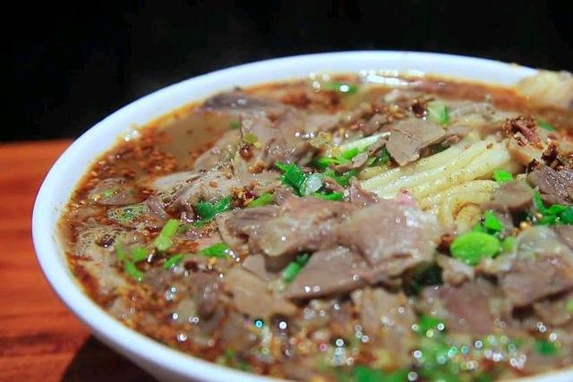
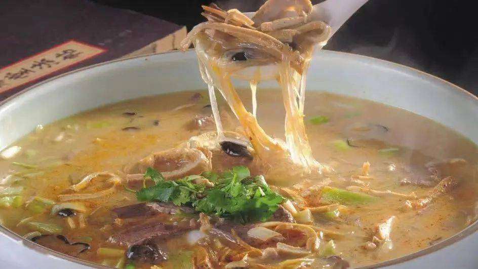
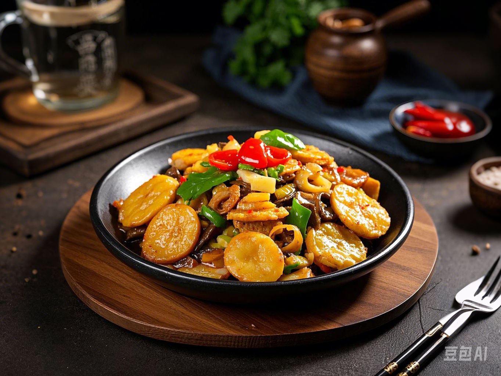
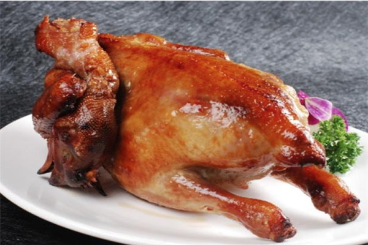

走进郏县街头，随处可见热气腾腾的饸饹面摊。细长劲道的面条，根根分明，在浓郁鲜美的羊肉汤中肆意翻滚。这羊汤可是店家精心熬制数小时的精华，奶白色的汤汁香气扑鼻，融入了羊肉的醇厚、羊骨的鲜香，再撒上一把翠绿的葱花、香菜，以及细碎的羊肉臊子，瞬间勾动味蕾。 当你挑起一筷子饸饹面，爽滑劲道的口感与醇厚热辣的汤汁在口腔中碰撞，一口面，一口汤，暖意瞬间传遍全身。清晨来上一碗，开启活力满满的一天；夜晚嗦上几口，驱散一天的疲惫。
饸饹面：面食爱好者的天堂

饸饹面
豆腐菜：暖身更暖心

豆腐菜
在寒冷的日子里，豆腐菜便是郏县人的心头好。它以嫩滑的豆腐、软糯的粉条为主料，佐以羊肉、羊杂碎等。豆腐切成小块，在锅中炖煮后吸饱了汤汁的鲜美，入口即化；粉条晶莹剔透，Q 弹爽滑，每一口都 “嗞溜” 有声。羊肉的加入为整道菜增添了浓郁的荤香，热气腾腾的一碗下肚，全身都暖烘烘的。 豆腐菜不仅美味，还饱含着浓浓的烟火气，街头巷尾的小馆子里，食客们围坐在一起，边吃边唠家常，氛围格外温馨。
揽锅菜：一锅烩尽美味精华

揽锅菜
揽锅菜堪称郏县美食中的 “大杂烩”，却杂而不乱，独具风味。五花肉、排骨、豆腐、粉条、时令蔬菜等汇聚一锅，经过慢火炖煮，各种食材的味道相互交融渗透。 五花肉肥而不腻，瘦肉部分鲜嫩多汁；排骨肉骨分离，啃起来趣味十足；豆腐炖煮后表面形成一层微微的焦壳，内里依旧嫩滑；粉条吸足了肉香与菜香，变得更加美味可口。配上店家特制的酱料，咸香微辣，一勺揽锅菜，能让你连下三碗饭。
烧鸡：皮脆肉嫩，香飘四溢

烧鸡
郏县烧鸡闻名遐迩，精选本地土鸡，运用独特的卤制工艺，让烧鸡的每一寸肌肤都浸润在醇厚的卤香之中。烧鸡色泽红亮，表皮烤至微微焦脆，轻轻一撕，鸡肉鲜嫩多汁，丝丝分明。 刚出锅的烧鸡香气扑鼻，还未入口，那股浓郁的香味便已让人垂涎欲滴。无论是作为正餐的主菜，还是闲暇时的零嘴，郏县烧鸡都不会让人失望。
踏上郏县这片土地，一场美食之旅就此拉开帷幕，这些独具特色的美食，用味道诉说着郏县的故事，等待着您来细细品味...